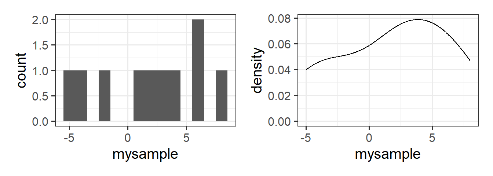
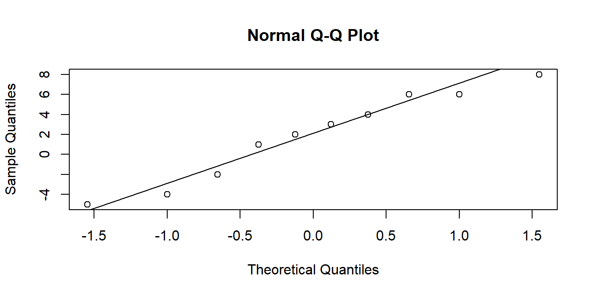

mysample <- c(1, -4, 6, 4, -2, 3, 2, -5, 6, 8)3B: Practical Inference
This reading:
- How does hypothesis testing work in practice?
- How do we do all this in R?
- spoiler: it’s easier than you think
- What are some basic hypothesis tests that we can conduct?
In the previous section we saw how we can apply the logic of Null Hypothesis Significance Testing (NHST), allowing us to draw inferences about parameters in the population, based on statistics computed on the sample we have collected.
NHST
We have a sample (\(n=10\)):
And a sample mean:
mean(mysample)[1] 1.9We want to test this against the null hypothesis that the mean in the population is actually 0.
Remember, there are lots of samples of size \(n=10\) that we could take, and they all have different means. To quantify the spread of these different means we can use the standard error, calculated using \(SE = \frac{\sigma}{\sqrt{n}}\):
sd(mysample) / sqrt(length(mysample))[1] 1.394035We can use this information to express how far away from the null hypothesis (mean = 0) our observed sample is, in terms of standard errors:
\[ Z \ = \ \frac{\text{estimate}-\text{null}}{SE} \ = \ \frac{1.9 - 0}{1.39} \ = \ 1.36 \]
We then ask, if the mean in the population is 0, what is the probability of obtaining a \(Z\)-statistic from a sample of this size at least as extreme as the one we have observed?
The resulting probability is our p-value:
2*pnorm(1.36, mean = 0, sd = 1, lower.tail = FALSE)[1] 0.1738299As our \(p\)-value is above our threshold of \(\alpha=.05\), we fail to reject the null hypothesis that the mean in the population is zero.
We can get to the same conclusion by constructing a 95% confidence interval:
xbar = mean(mysample)
se = sd(mysample) / sqrt(length(mysample))
c(xbar - (1.96 * se), xbar + (1.96 * se))[1] -0.8323084 4.6323084As this interval includes zero, then at the 5% level we fail to reject the null hypothesis that the population mean is zero.1
While in practice NHST follows the logic described above, there is something important that we have been sweeping under the carpet.
In our estimation of the standard error we have used the formula that includes \(\sigma\), which refers to the population standard deviation. However, we never know this value (because we don’t have data for the population), so we have been using the sample standard deviation \(s\) instead. This is an approximation, and might be okay when we have a very large \(n\) (meaning \(s\) provides accurate estimate of \(\sigma\)), but in practice is not always feasible.
\[ SE = \frac{\sigma}{\sqrt{n}} \approx \frac{s}{\sqrt{n}} \]
\(t\)-distributions
To resolve the issues with this approximation (using \(s\) in place of \(\sigma\)), instead of using the normal distribution, we tend to instead use the \(t\)-distribution.
The \(t\) distribution is very similar to the normal distribution, but it has slightly heavier tails:
\(t\)-distributions are always centered on zero, and the precise shape (how heavy the tails are) depends upon a parameter known as the degrees of freedom.
Degrees of Freedom - \(df\)
‘Degrees of freedom’ is a tricky concept. One of the most intuitive ways to understand it is to think of it as the number of independent bits of information that go into calculating an estimate. Put another way, it is the number of datapoints that are free to vary.
When we estimate the mean from a sample, we use up one of our degrees of freedom, and so our test of a single mean will require us to use a \(t\)-distribution with \(n-1\) degrees of freedom. For \(t\)-distributions, as the \(df\) increases the distribution becomes closer and closer to a normal distribution (see Figure 3) - the use of these \(t\)-distributions is exactly what we need to account for using \(s\) in our calculation of the standard error.
In order to utilise the \(t\)-distribution in hypothesis testing, we need to move to performing \(t\)-tests!
The logic remains the same as before, but where we previously were relying on the normal distribution:
pnorm()for our \(p\)-valuesqnorm()in order to calculate our confidence intervals (qnorm(0.975)gives the 1.96 we have been using)
We can use pt() and qt() to conduct the same process but in reference to the appropriate \(t\)-distribution.
Demonstration: t-test for a single mean
Recalling our sample, we’ll now perform the appropriate test against the null hypothesis that the mean in the population is zero.
mysample <- c(1, -4, 6, 4, -2, 3, 2, -5, 6, 8)Now that we move to using \(t\)-distributions, our test-statistic is going to be a \(t\)-statistic:
\[ \begin{align} & t = \frac{\bar x - \mu_0}{\frac{s}{\sqrt{n}}}\\ \ \\ & \text{where:} \\ & \bar x : \text{sample mean} \\ & \mu_0 : \text{hypothesised population mean} \\ & s : \text{sample standard deviation} \\ & n : \text{sample size} \\ \end{align} \]
Which can be calculated as:
xbar = mean(mysample)
se = sd(mysample) / sqrt(length(mysample))
tstat = (xbar - 0) / se
tstat[1] 1.36295Because we have \(n=10\), and we are estimating a sample mean, we are going to be referring to a \(t\)-distribution with 9 (\(10-1\)) degrees of freedom (we lose one by calculating the mean).
Our p-value can be found with the pt() function:
2*pt(tstat, df = 9, lower.tail = FALSE)[1] 0.2060213And our confidence interval can be constructed using:
\[ \text{95% CI} = \bar{x} \pm t^* \times SE \\ \]
Note that \(t^*\) has replaced the 1.96 we saw in previous chapters, because we obtained that using the normal distribution. The code qnorm(c(0.025, 0.975)) shows us that 95% of normal distribution is beyond 1.96 from the mean. But what we actually want to know is where 95% of the \(t\)-distribution with \(df=9\) lies:
So instead we can use:
qt(c(0.025, 0.975), df = 9)[1] -2.262157 2.262157And our confidence interval is:
xbar = mean(mysample)
se = sd(mysample) / sqrt(length(mysample))
c(xbar - (2.262 * se), xbar + (2.262 * se))[1] -1.253307 5.053307R: Making things easier
All of the above is crucial for understanding how this all works, but in practice we can avoid all of the rigmarole of ever calculating the standard error or using functions like pt(), qt(). This is where R starts to become far more powerful - there are functions that do all this sort of stuff for us - in just one single line of code!
Take a look at the output of the function below. I have given it the sample, and specified that we want it to test against the null hypothesis that \(\mu=0\).
t.test(mysample, mu = 0)
One Sample t-test
data: mysample
t = 1.363, df = 9, p-value = 0.206
alternative hypothesis: true mean is not equal to 0
95 percent confidence interval:
-1.253526 5.053526
sample estimates:
mean of x
1.9 The t.test() function here gives us the \(t\)-statistic, the \(df\), the \(p\)-value, the 95% CI, the mean \(\bar x\), and it even tells us the alternative hypothesis (that the true mean is \(\neq 0\)).
All of these numbers will match those that we calculated above (there may be a small bit of rounding error).
It’s that easy!
Checking/Testing Assumptions
These sort of tests often require us to meet a set of conditions in order for our inferences to be valid. When we perform tests like these that involve estimating a mean, a common requirement is that the deviations from that mean are close to normally distributed.
Assumption Plots
We can evaluate how close to normal a distribution is by visualising it via histograms and density plots and making a judgment call, but this can sometimes be hard:
Code
data <- tibble(mysample = mysample)
ggplot(data,aes(x=mysample))+geom_histogram(bins=14) +
ggplot(data,aes(x=mysample))+geom_density()
Another useful visualisation tool is the QQplot. The closer to the diagonal line, the closer our data is to being normally distributed:
qqnorm(data$mysample) # make the plot
qqline(data$mysample) # add the line
Assumption Tests
There are also, if we wish to make use of them, specific hypothesis tests that assess normality, such as the ‘Shapiro-Wilks’ Test. The null hypothesis for this test is that the data we give it are drawn from a normal distribution. This means that we want a p-value greater than .05. So in the example below, we have no reason to reject the hypothesis that our data are drawn from a normal distribution. This means we can continue to conduct a t-test.
shapiro.test(mysample)
Shapiro-Wilk normality test
data: mysample
W = 0.94722, p-value = 0.6358Basic Tests
Now that we’ve gone through all the nitty-gritty bits of how hypothesis testing works, the heavy lifting is done.
we’re going to start to look at some of the different basic hypothesis tests that we can perform.
For each test below we show an example conducted the quick way (e.g. t.test() function), and also the manually computations (for those of you who are interested!). We’ve already seen the one sample \(t\)-test in the example above, so you might want to skim over that section.
something to bear in mind
These tests are the simple hypothesis tests that were developed in the 19th and 20th centuries, and provide a good basis of understanding the null hypothesis significance testing framework.
In the latter half of this course, we move to focus on a modelling based approach for analysing data. We will start to see how many of these simple tests that we are learning now are actually special cases of a more general statistical model.
One sample t-test
Purpose
The one sample t-test is what we have already seen above. We use it to test whether the mean is different from/greater than/less than some hypothesised value.
- Examples:
- Is the mean age of USMR students different from 20?
- Is the mean IQ different from 100?
- Do people read more than 250 words per minute?
Assumptions:
- The data are continuous (not discrete)
- The data are independent (i.e. the value of a datapoint does not depend on the value of another datapoint in any way)
- The data are normally distributed OR the sample size is large enough (rule-of-thumb n = 30) and the data are not strongly skewed
Research Question: Do people read more than 250 words per minute?
Fifty participants were recruited and tasked with reading a passage of text that was 2000 words long. Their reading times (in words per minute) was recorded, and these are accessible at https://uoepsy.github.io/data/usmr_tread.csv.
wpmtime <- read_csv("https://uoepsy.github.io/data/usmr_tread.csv")
head(wpmtime)# A tibble: 6 × 2
id wpm
<chr> <dbl>
1 ppt_1 307
2 ppt_2 265
3 ppt_3 205
4 ppt_4 300
5 ppt_5 207
6 ppt_6 300
Two sample t-test
Purpose
The two sample t-test is used to test whether the mean of one group is different from/greater than/less than the mean of another.
- Examples:
- Is the mean age of cat people different from the mean age of dog people?
- Do people who identify as “morning people” have a higher average rating of sleep quality than those who identify as “evening people”?
- Is the average reaction time different between people who do and don’t drink caffeinated drinks?
Assumptions:
- The data are continuous (not discrete)
- The data are independent (i.e. the value of a datapoint does not depend on the value of another datapoint in any way)
- The data are normally distributed for each group, OR the sample size is large enough (rule-of-thumb n = 30) and the data are not strongly skewed
- The variance is equal across groups*.
*We can relax this assumption by using an adjusted test called the “Welch \(t\)-test”, which calculates the standard error slightly differently, and estimates the degrees of freedom differently too. This is actually the default in R, and we change this easily in R using t.test(...., var.equal = FALSE/TRUE)
Research Question: Is the average reaction time different between people who do and don’t drink caffeinated drinks?
One hundred participants were recruited and completed a simple reaction time task. They were also surveyed on whether they regularly drank caffeine in any form. The data are accessible at https://uoepsy.github.io/data/usmr_tcaff.csv.
tcaff <- read_csv("https://uoepsy.github.io/data/usmr_tcaff.csv")
head(tcaff)# A tibble: 6 × 2
rt caff
<dbl> <chr>
1 482. yes
2 389. yes
3 484. no
4 601. no
5 409. yes
6 368. no 
Paired sample t-test
Purpose
The paired sample t-test is used to test whether the mean difference between two sets of paired observations is different from 0.
- Examples:
- Is the mean cognitive score of participants at age 60 different from when they are re-tested at age 70?
- Are scores on test 1 different on average from scores on test 2 (with participants completing both tests).
- Is the mean cognitive score of participants at age 60 different from when they are re-tested at age 70?
Assumptions:
- The data are continuous (not discrete)
- The differences are independent (i.e. the value of a the difference for one pair does not depend on the values of another pair in any way)
- The differences are normally distributed OR the sample size is large enough (rule-of-thumb n = 30) and the data are not strongly skewed
Research Question: Is the mean cognitive score of participants at age 60 different from when they are re-tested at age 70?
Addenbrooke’s Cognitive Examination-III (ACE-III) is a brief cognitive test that assesses five cognitive domains: attention, memory, verbal fluency, language and visuospatial abilities. The total score is 100 with higher scores indicating better cognitive functioning. A research project is examining changes in cognitive functioning with age, and administers the ACE-III to a set of participants at age 60, then again at age 70. The data is accessible at https://uoepsy.github.io/data/usmr_tcaff.csv.
acedata <- read_csv("https://uoepsy.github.io/data/acedata.csv")
head(acedata)# A tibble: 6 × 3
participant ace_60 ace_70
<chr> <dbl> <dbl>
1 sub1 93 85
2 sub2 95 92
3 sub3 93 90
4 sub4 93 95
5 sub5 96 88
6 sub6 91 85
Footnotes
Remember that confidence intervals provide a range of plausible values for the population mean. In this case, zero is a plausible value.↩︎